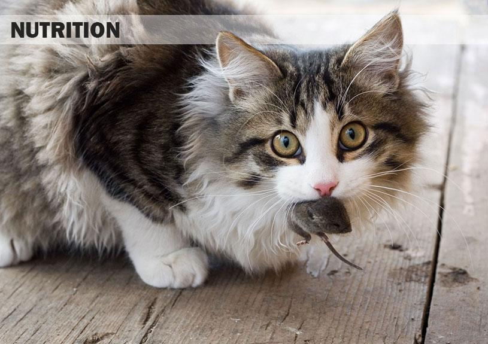

How you can compare these selfish useless cat creatures with dogs?
I have a cat, it wasn’t even my choice. My kids found little skinny kitten who didn’t eat or eat for a few days. They name her Alice. She was so thankful to be at home instead of freezing cold street. She was nice to everyone and I let them keep her.
A few years later Alice thing she is a boss of the house, she looks at everyone like we are her slaves. She is very controlling and bits the dog up if he meets other dogs or cuts outside.
Unlike my pup Tony. He is always happy to see you, he loves everyone unconditionally. He is never grumpy.
Dog is also a great companion, you can take him to camping trip or just a car ride and he will enjoy it. Dog are your friend, and don’t treat you like slaves.
10 Reasons Why Cats Make Better Pets Than Dogs

One of the main advantages of owning cats is that you don't need to walk from. The next advantage of cats is that they require less attention than dogs.
Cats also sleep a lot and do not get underfoot.

Cats do not stink as much as dogs.
There are less than six from cats than from dogs.
Cats take up less space in the house than dogs.
Cats eat little.
Cats prey on rodents.

Affectionate cats.
Cats can purr.
Cats are very elegant.

Loving cats is nice.
Cats have beautiful eyes.

Cats have a long mustache.